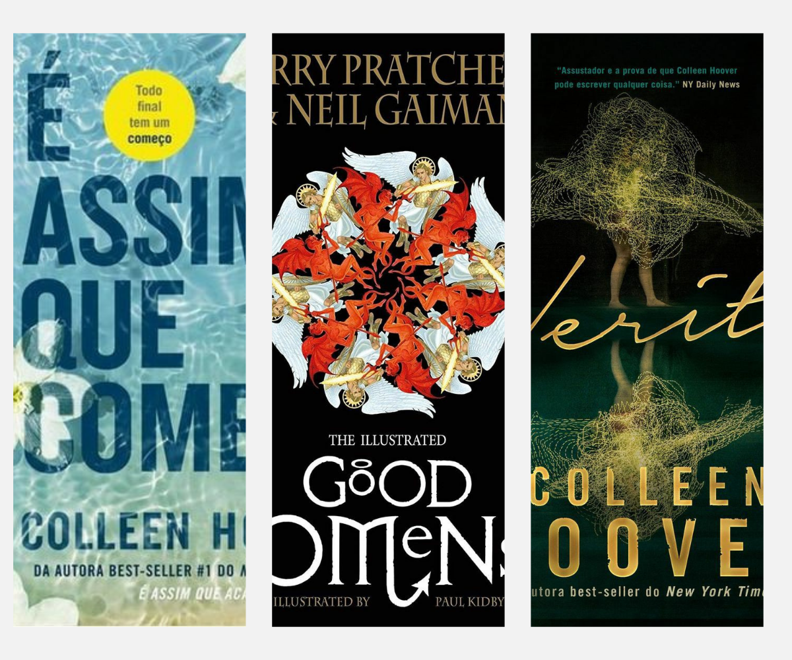
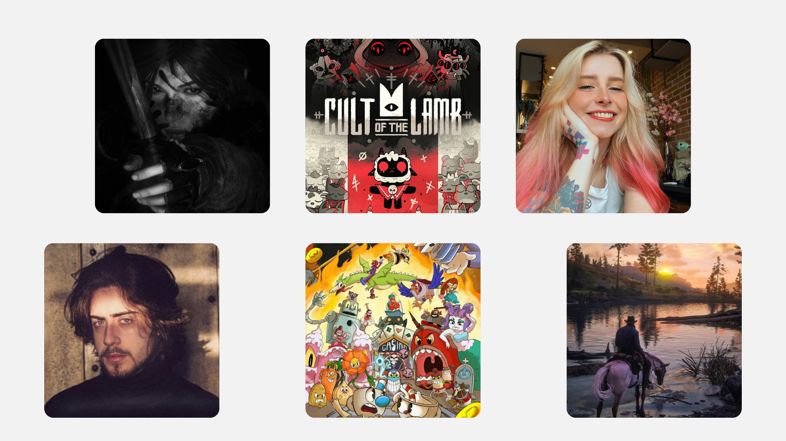

A música é uma parte essencial do meu dia (não consigo viver sem meu fone). Eu curto pop e rock, estilos que realmente combinam comigo. Taylor Swift, Carol Biazin e Billie Eilish são cantoras que fazem minha trilha sonora diária enquanto Bring Me the Horizon e Megadeth são as bandas que me acompanham sempre mesmo agora que eu já passei da minha fase "emo".
Taylor Swift é uma das maiores estrelas do pop mundial, conhecida por sua habilidade em contar histórias emocionantes através de suas letras. Ao longo de sua carreira, ela migrou do country para o pop, explorando temas como amor, perda e amadurecimento em suas músicas.
Carol Biazin é uma cantora e compositora brasileira que mistura pop com influências de R&B e MPB, trazendo uma voz poderosa e letras que falam de amor, empoderamento e relações pessoais. Ela tem ganhado cada vez mais destaque no cenário musical nacional.
Billie Eilish é uma artista americana que conquistou o mundo com seu estilo único de pop alternativo, caracterizado por batidas minimalistas e letras profundas e sombrias. Com sua abordagem intimista e vulnerável, ela se tornou uma voz representativa da geração atual.
Bring Me the Horizon é uma banda britânica que começou no metalcore, mas evoluiu para um som mais diversificado, misturando elementos de rock, pop, eletrônica e até música experimental. Suas letras abordam temas como dor, superação e conflitos internos.
Megadeth é uma das maiores bandas de thrash metal da história. Fundada por Dave Mustaine, suas músicas são conhecidas pela técnica instrumental e pelas letras que tratam de temas políticos, guerra e sociedade, sempre com uma pegada intensa e agressiva.
livros
Nos livros, meus favoritos são "Verity", "Good Omens" e "É Assim Que Começa". Eles são a minha fuga perfeita, impedindo que eu entre em colapso.
"Verity", de Colleen Hoover, é um thriller psicológico envolvente que gira em torno de Lowen, uma escritora que é contratada para terminar os livros da famosa autora Verity Crawford, após um acidente. Ao vasculhar a casa de Verity, Lowen encontra uma autobiografia perturbadora que revela segredos obscuros sobre a autora e seu passado.
"Good Omens", escrito por Neil Gaiman e Terry Pratchett, é uma fantasia cômica que narra a tentativa de um anjo, Aziraphale, e um demônio, Crowley, de impedir o Apocalipse. Os dois desenvolveram uma certa simpatia pelo mundo humano e formam uma aliança improvável para salvar a Terra de uma destruição iminente, em uma história repleta de humor, ironia e referências religiosas.
"É Assim Que Começa", escrito por Jennifer Weiner, é um romance que gira em torno da vida de uma mulher chamada Abby. Ela está lutando para equilibrar sua carreira, vida pessoal e os desafios que enfrentou ao longo da vida. A história aborda temas de autodescoberta, relacionamentos e o impacto das escolhas feitas em momentos cruciais. A narrativa é envolvente e oferece uma visão sobre a complexidade das emoções e das decisões que moldam nossas vidas.

Eu também amo jogos "Cult of the Lamb", "Cuphead", "Red Dead Redemption 2" e "Rise of the Tomb Raider" são os meus favoritos mas tento não me prender muito no mundo dos jogos.
"Cult of the Lamb" é um jogo de ação e estratégia onde você assume o papel de um cordeiro possuído, que foi salvo da morte por um deus sombrio. Agora, você deve formar um culto de seguidores fiéis, explorando florestas perigosas, lutando contra inimigos e gerenciando seu rebanho em uma mistura envolvente de combate e construção.
"Cuphead" é um jogo de plataforma e tiro inspirado nos desenhos animados dos anos 1930. Com gráficos desenhados à mão e trilha sonora jazzística, ele desafia os jogadores com chefes incrivelmente difíceis, exigindo precisão e paciência enquanto você e seu irmão Mugman lutam para pagar uma dívida ao diabo.
"Red Dead Redemption 2" é um épico de mundo aberto que se passa no fim do Velho Oeste americano. Você controla Arthur Morgan, um fora da lei em uma gangue que luta para sobreviver enquanto o mundo ao seu redor está mudando. O jogo oferece uma imersão incrível com uma narrativa profunda, personagens complexos e cenários deslumbrantes.
"Rise of the Tomb Raider" acompanha Lara Croft em sua jornada para descobrir os segredos da imortalidade. O jogo combina exploração, combate e resolução de quebra-cabeças, enquanto Lara enfrenta forças inimigas e sobrevive a condições extremas em locais deslumbrantes e perigosos, tudo para desvendar mistérios antigos.
E não posso esquecer dos meus streamers favoritos. Cellbit, Bagi, Alanzoka e Guaxinim eles que me fazem rir em momentos de desânimo rir muuuuuuuuito.
Cellbit é um streamer e criador de conteúdo conhecido por seus vídeos e transmissões ao vivo de jogos variados, especialmente em jogos de terror e mistério. Ele também é famoso por suas séries de RPG e sua interação envolvente com o público, sempre trazendo um toque de humor e criatividade.
Bagi é uma streamer que se destaca pelo seu conteúdo divertido e envolvente. Ela costuma jogar uma variedade de jogos, desde títulos populares até lançamentos indie, e é conhecida por seu estilo descontraído e carismático, criando uma atmosfera divertida e acolhedora para seus espectadores.
Alanzoka é um dos maiores streamers do Brasil, famoso por suas transmissões de jogos variados e seu estilo energético. Ele combina gameplay de alta qualidade com uma personalidade carismática, interagindo de forma intensa e divertida com sua audiência.
Guaxinim é um streamer que se destaca pelo seu conteúdo de games variados e seu jeito divertido e espontâneo de se comunicar com o público. Ele é conhecido por sua habilidade em criar um ambiente leve e engraçado durante suas transmissões, fazendo com que os espectadores se sintam parte de uma grande comunidade.
